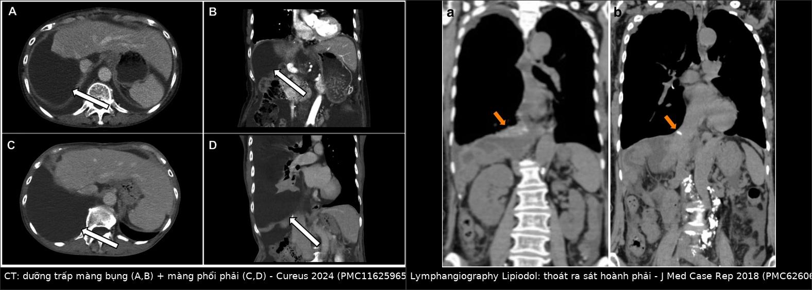
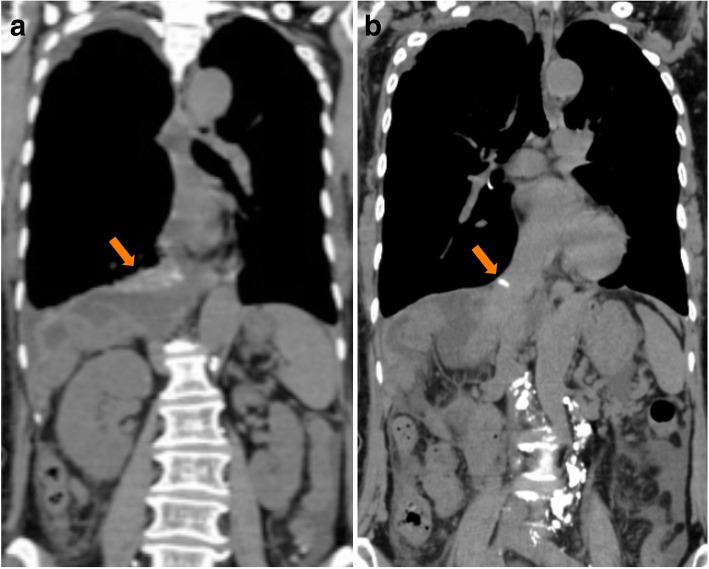
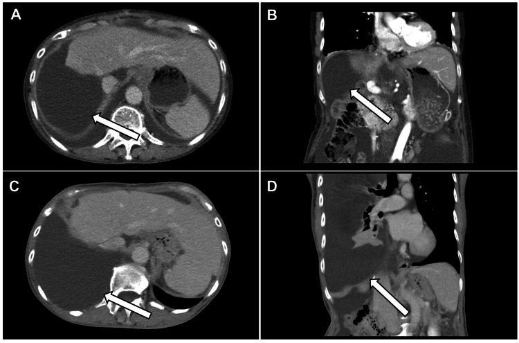
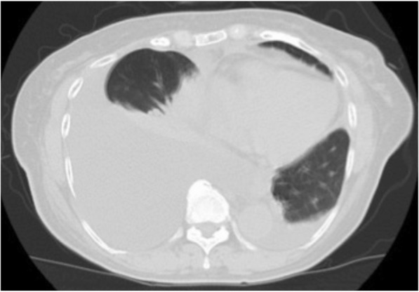

1839 — Chylothorax sau cắt gan/ghép gan: phân biệt với bilothorax và ngưỡng triglyceride dịch / Chylothorax after hepatectomy and liver transplantation: separating it from bilothorax
Tags: pattern:chylothorax pattern:tran-dich-mang-phoi pattern:ro-bach-huyet vung:gan vung:co-hoanh vung:mong-phoi score:Light protocol:CT-nguc-bung protocol:lymphangiography protocol:DCMRL incidentaloma:chylous-ascites
Mức chắc chắn (certainty): tổng hợp y văn (literature synthesis) — tự biên từ ca dưỡng trấp màng bụng tiến triển thành chylothorax sau cắt gan phải mở rộng + nạo hạch (PMC11625965, CC BY 4.0), ca chylothorax sau cắt gan phải ngày 42 (PMC6260677, CC BY 4.0), ca chylothorax + chyloperitoneum sau ghép gan kèm tổng quan (PMC6679892, CC BY 4.0), đoàn hệ 159 ca phẫu thuật tụy–mật (PMC6788374, CC BY 4.0) và 10 ca chylous ascites sau mổ bụng được chụp bạch mạch hạch bẹn (PMC11538909, CC BY-NC-ND 4.0). Chưa gắn một ca nguyên văn đơn lẻ của riêng bài.
Bài này là nhánh "bạch mạch" của 1820 – Rò mật–màng phổi (bilothorax). 1820 đã chốt tỷ lệ bilirubin dịch/huyết thanh > 1 và phải vừa dẫn lưu màng phổi vừa giải áp đường mật. Nhưng cùng một bệnh nhân sau cắt gan, dịch trắng đục có thể là dưỡng trấp chứ không phải mật — và hai bệnh cảnh đi ngược nhau: bilothorax cần ERCP/PTBD, chylothorax cần dinh dưỡng + octreotide + can thiệp bạch mạch, còn đặt stent đường mật trong chylothorax là vô ích và làm chậm dinh dưỡng.
Câu chốt: Tràn dịch màng phổi phải sau cắt gan là chuyện thường (18,4–54,5%, trong đó 5,3% phải đặt ống — bài 1820), nhưng "dịch trắng đục" là chylothorax cho tới khi triglyceride dịch chứng minh ngược. Ngưỡng triglyceride dịch màng phổi > 110 mg/dL (1,24 mmol/L) là chốt xác định; 50–110 mg/dL là vùng xám phải tìm hạt chylomicron; < 50 mg/dL gần như loại trừ. Ca minh họa: dịch màng bụng triglyceride 1.571 mg/dL, ba tháng sau 2 L dịch màng phổi sữa với triglyceride 483 mg/dL (PMC11625965); ca khác tràn dịch phải ngày 42 sau cắt gan, tái tích ngày 57, chỉ khô sau chụp bạch mạch ngày 62 (PMC6260677).
1. Tổng quan bệnh học – cơ chế hình ảnh
- Dưỡng trấp (chyle) là gì: dịch bạch huyết từ ruột non, giàu triglyceride dạng hạt chylomicron, lymphocyte, protein và immunoglobulin. Lưu lượng ống ngực ~1,5–2,5 L/ngày ở người lớn và tăng nhiều lần sau bữa ăn có mỡ — đó là lý do dịch trắng đục xuất hiện/ tăng sau khi ăn, còn khi nhịn ăn dịch có thể trong như huyết thanh.
- TẠI SAO cắt gan/ghép gan lại làm rò bạch mạch: chuỗi bạch mạch gan đi theo cuống gan và dây chằng gan–tá tràng rồi đổ về bể dưỡng trấp (cisterna chyli) và ống ngực. Ba thời điểm dễ đứt: (1) nạo hạch rốn gan / quanh động mạch gan, (2) bóc tách tĩnh mạch chủ dưới và vùng sau phúc mạc, (3) mặt cắt nhu mô gan. Khi mổ cắt gan phải mở rộng + nạo hạch, tổn thương bạch mạch gần như không tránh được ở mức vi thể.
- TẠI SAO dưỡng trấp màng bụng lại thành dưỡng trấp màng phổi: dịch tích trong ổ bụng (chylous ascites) làm tăng áp lực ổ bụng, rồi đi qua khiếm khuyết nhỏ của cơ hoành — vùng "bare area" phải nơi cơ hoành không có phúc mạc che và nơi cơ hoành mỏng nhất — vào khoang màng phổi. Vì vậy gần như luôn là bên PHẢI. Ca minh họa tìm thấy lỗ thủng cơ hoành và dưỡng trấp chảy từ bạch mạch rốn gan khi nội soi lồng ngực (PMC11625965).
- TẠI SAO CT một mình KHÔNG gọi tên được bệnh — vật lý HU: dưỡng trấp có tỷ trọng 0–20 HU, gần trùng dịch thanh mạc, mật, nước tiểu và mủ loãng. Trên CT, chylothorax chỉ là "dịch đậm độ dịch"; cái phân biệt là màu sữa khi chọc dò + sinh hóa dịch. Ngược lại máu tụ 35–70 HU mới tách được bằng đậm độ.
- TẠI SAO phải phân biệt với bilothorax ngay từ đầu: sau cắt gan, cả hai đều cho dịch màng phổi phải và đều có thể trắng đục/vàng. Nhưng bilothorax có bilirubin dịch/huyết thanh > 1 và cần giải áp đường mật; chylothorax có triglyceride rất cao, bilirubin thấp và cần bù dinh dưỡng + can thiệp bạch mạch. Đo cả triglyceride, bilirubin, amylase trên cùng một mẫu dịch là cách rẻ nhất để không đi sai đường.
- TẠI SAO chylothorax nguy hiểm hơn "một ít dịch": mất 500–1.000 mL/ngày kéo dài gây giảm thể tích, giảm albumin, giảm lymphocyte (mất CD4), suy dinh dưỡng, suy giảm miễn dịch và nhiễm trùng. Ca sau ghép gan được mô tả với dưỡng trấp màng bụng + màng phổi và kéo dài nằm viện (PMC6679892); ca sau cắt gan phải mở rộng có albumin 2,4 g/dL và tình trạng dinh dưỡng xấu đi rõ khi chylothorax xuất hiện (PMC11625965).
- Số phải nhớ — tần suất và thời điểm: chylothorax sau mổ ngực < 1%; sau mổ bụng "cực kỳ hiếm", chủ yếu là ca lẻ (PMC6260677). Chylous ascites sau ghép gan 0,6–7% (PMC6679892). Trong 159 ca phẫu thuật tụy–mật: rò dưỡng trấp 3,6% sau cắt tá tràng–tụy (5/137) và 4,5% sau nối mật–ruột (1/22), lưu lượng trung bình 441 mL/ngày (150–800), kéo dài 16,5 ngày (4–35), nằm viện 19,1 ngày (PMC6788374). Thời điểm xuất hiện rất muộn: ngày 5 (ascites) → ngày 42 (khó thở, tràn dịch phải) → ngày 57 (tái tích) → ngày 62 chụp bạch mạch → ngày 71 khô (PMC6260677); ca khác 1 tháng sau mổ mới có ascites và 3 tháng mới có chylothorax (PMC11625965).
- TẠI SAO muộn như vậy: rò bạch mạch lưu lượng thấp tích dần, không gây viêm màng phổi dữ dội như mật; bệnh nhân chỉ khó thở khi dịch đã lớn, và dịch có thể bị quy cho "tràn dịch sau mổ" rồi theo dõi. Đây là lý do mọi tràn dịch phải đặt ống sau cắt gan cần được chọc/đo sinh hóa chứ không chỉ nhìn siêu âm.
2. Mẫu hình + chẩn đoán phân biệt theo bối cảnh (gamut)
- Bối cảnh 1 — cắt gan phải mở rộng + nạo hạch rốn gan: thể điển hình nhất; ascites trước, chylothorax sau (PMC11625965). Dịch trắng đục như sữa, không mùi, không sốt.
- Bối cảnh 2 — ghép gan (đặc biệt gan sống cho): bóc tách cuống gan + tĩnh mạch chủ; có thể kết hợp chyloperitoneum + chylothorax (PMC6679892). Tần suất 0,6–7%.
- Bối cảnh 3 — phẫu thuật tụy–mật: cắt tá tràng–tụy, nối mật–ruột; lưu lượng trung bình 441 mL/ngày, tự khỏi 16,5 ngày với dinh dưỡng + octreotide (PMC6788374).
- Bối cảnh 4 — ALPPS/cắt gan hai thì: diện mổ lớn + hai lần can thiệp → nguy cơ rò bạch mạch tăng; cùng nhóm "diện cắt lớn".
- Bối cảnh 5 — sau mổ thực quản/ngực: tổn thương trực tiếp ống ngực; chylothorax thường bên phải ở ngực dưới, bên trái ở ngực trên; xuất hiện sớm hơn và lưu lượng lớn hơn.
- Bối cảnh 6 — xơ gan có "hepatic chylothorax": tràn dịch dưỡng trấp do tăng áp cửa, thường kèm ascites, dịch có thể transudate và triglyceride thấp hơn nhóm sau mổ; không có đường rò khu trú để can thiệp — điều trị bệnh gan nền + dinh dưỡng.
- Bối cảnh 7 — bilothorax: dịch vàng–nâu ô liu, bilirubin dịch/huyết thanh > 1, có biloma dưới hoành; cần ERCP/PTBD (bài 1820).
- Bối cảnh 8 — rò tụy–màng phổi: dịch amylase rất cao (> 1.000 U/L), thường bên trái, kèm nang giả tụy; đây là hàng phân biệt của "tràn dịch tái diễn sau mổ bụng trên" (bài 1737).
- Bối cảnh 9 — empyema/hemothorax: sốt, đau ngực, pH thấp, hoặc Hct dịch > 50% Hct máu; không có màu sữa.
- Gợi nhớ 6 chữ — "C-H-Y-L-E-S": Context (cắt gan/ghép/tụy) · Hilum (nạo hạch rốn gan) · Yield (lưu lượng mL/ngày) · Light (triglyceride > 110) · Extravasation (lymphangiography) · Step-up (MCT → TPN/octreotide → can thiệp).
3. Bảng so sánh phân biệt (ma trận đối chiếu)
| Thực thể (entity) | Hình ảnh / dấu hiệu điển hình | Chốt vào (rule-in) | Chốt loại (rule-out) | Gợi ý xác nhận |
|---|---|---|---|---|
| Chylothorax sau cắt gan/ghép gan | Tràn dịch phải, muộn (ngày 5–42), dịch trắng đục như sữa; có/không kèm chylous ascites; CT không thấy bệnh nhu mô phổi | Triglyceride dịch > 110 mg/dL + dịch/máu > 1 + bối cảnh nạo hạch/bóc tách cuống gan | Dịch trong, triglyceride < 50 mg/dL, không tăng sau ăn mỡ → không phải dưỡng trấp | Chọc dò + sinh hóa; lymphangiography tìm thoát thuốc |
| Bilothorax | Tràn dịch phải, vàng–nâu ô liu, có biloma dưới hoành | Bilirubin dịch/huyết thanh > 1 + biloma sát cơ hoành | Bilirubin dịch thấp, triglyceride rất cao → dưỡng trấp | CT ngực–bụng, HIDA/CE-MRCP, ERCP (bài 1820) |
| Rò tụy–màng phổi | Tràn dịch trái nhiều, tái diễn, kèm nang giả tụy/giãn ống tụy | Amylase dịch rất cao (hàng nghìn U/L) + hình ảnh tụy | Amylase dịch thấp → loại | CT tụy thì muộn, MRCP (bài 1737) |
| Tràn dịch màng phổi "đơn thuần" sau cắt gan | Lượng ít–vừa, tự giảm, không sốt, không ascites | Triglyceride < 50 mg/dL, bilirubin ≤ 1, amylase thấp | Dịch sữa/tăng triglyceride → không đơn thuần | Theo dõi 48–72 giờ; chọc khi không giảm |
| Empyema | Dịch vách, khí trong màng phổi, màng phổi dày, sốt cao | pH < 7,2, glucose thấp, LDH cao, cấy dương | Dịch trong, cấy âm, không vách | Dẫn lưu + cấy; đo triglyceride song song |
| Hemothorax | Dịch máu, thiếu máu, Hct dịch cao | Hct dịch > 50% Hct máu | Hct dịch thấp + dịch sữa → không phải máu | CT + chọc dò |
| Hepatic chylothorax (xơ gan, tăng áp cửa) | Tràn dịch phải, kèm ascites, gan xơ, không có mổ | Triglyceride > 110 mg/dL nhưng không có đường rò khu trú, bệnh gan nền rõ | Có bối cảnh mổ + thoát thuốc trên lymphangiography → rò sau mổ | Siêu âm/CT gan, đo áp cửa gián tiếp |
| Chylous ascites KHÔNG thông màng phổi | Bụng căng dịch, không tràn dịch hoặc rất ít | Triglyceride dịch bụng > 110 mg/dL, dịch/máu > 1, bạch cầu > 1.000/µL, lymphocyte chiếm ưu thế | Có tràn dịch phải lượng lớn + lỗ hoành → đã thông | CT ngực–bụng; lymphoscintigraphy |

Trái: CT có cản quang — (A,B) dưỡng trấp màng bụng, (C,D) tràn dưỡng trấp màng phổi phải (mũi tên trắng), sau cắt gan phải mở rộng + nạo hạch. Phải: chụp bạch mạch bằng Lipiodol — thuốc thoát ra sát khoang màng phổi phải trên cơ hoành (mũi tên) nhưng không định vị được chính xác lỗ rò; hình b: Lipiodol tụ quanh đường đóng mỏm gan phải. Ảnh ghép letterbox nền đen, không crop/kéo giãn. Nguồn: Cureus 2024 (PMC11625965) Figure 2, CC BY 4.0 (trái); J Med Case Rep 2018 (PMC6260677) Fig. 5, CC BY 4.0 (phải).Vì sao "dịch sữa" không đủ và "dịch trong" không loại trừ
- Dịch có thể KHÔNG đục: bệnh nhân nhịn ăn/ăn ít mỡ → dưỡng trấp trong như huyết thanh, dễ bị đọc là transudate. Vì vậy không dựa vào màu; phải đo triglyceride và cho ăn mỡ rồi lặp siêu âm/CT nếu còn nghi.
- Vùng xám 50–110 mg/dL: làm điện di lipoprotein tìm hạt chylomicron (chốt xác định), hoặc tỷ lệ triglyceride dịch/máu > 1.
- Bạch cầu dịch > 1.000/µL với lymphocyte ưu thế là dấu phụ hữu ích nhưng không thay triglyceride (PMC6679892).
4. Protocol + phân tầng xử trí
- Chẩn đoán hình ảnh: CT ngực–bụng có cản quang (thì tĩnh mạch cửa) là bước đầu — trả lời lượng dịch, vị trí, có ascites, có biloma/nang giả tụy, có lỗ hoành. CT không chứng minh dưỡng trấp.
- Chọc dò màng phổi — bộ xét nghiệm tối thiểu: triglyceride, cholesterol, bilirubin, amylase, LDH, glucose, pH, tế bào (công thức), cấy, tế bào học; nếu triglyceride 50–110 mg/dL → điện di lipoprotein.
- Chẩn đoán "đường rò" (không bắt buộc để điều trị bảo tồn, nhưng cần khi định can thiệp):
- Lymphoscintigraphy (Tc-99m): thấy rò vào khoang màng phổi/ổ bụng nhưng độ phân giải thấp; ca PMC11625965 cho âm tính ở ống ngực, từ đó kết luận nguồn là bạch mạch rốn gan.
- Chụp bạch mạch hạch bẹn qua siêu âm (intranodal lymphangiography) với Lipiodol: kim 25–27 G vào hạch bẹn, bơm 3,5–7,0 mL (trung bình 4,5 mL); trong 10 ca sau mổ bụng (9 ca sau mổ gan), 3 ca thấy thoát thuốc trực tiếp và 5 ca thấy trên CT sau chụp; 6/10 ca khỏi chỉ nhờ chụp bạch mạch, không cần mổ (PMC11538909).
- DCMRL khi có MRI: đánh giá dòng ống ngực, tắc/nghẽn, dòng ngược trước khi nút mạch.

Chụp bạch mạch bằng Lipiodol sau cắt gan phải: (a) thuốc thoát ra sát khoang màng phổi phải trên cơ hoành (mũi tên) nhưng không định vị được chính xác lỗ rò; (b) Lipiodol tụ quanh đường đóng mỏm gan phải. Đây là ví dụ "chụp bạch mạch vừa chẩn đoán vừa điều trị" — dịch khô dần sau thủ thuật dù không thấy lỗ. Nguồn: J Med Case Rep 2018 (PMC6260677) Fig. 5, CC BY 4.0.- Phân tầng điều trị (step-up) — không có RCT, bằng chứng chủ yếu là đoàn hệ/ca lẻ:
- Chế độ ít mỡ / MCT (thực hành: tổng mỡ < 20 g/ngày) — giảm dòng dưỡng trấp; vẫn đủ năng lượng.
- Nhịn ăn + TPN khi lưu lượng cao hoặc không giảm sau 1–2 tuần.
- Octreotide (somatostatin analogue) — được dùng rộng rãi nhưng liều và thời gian chưa chuẩn hóa; chính ca PMC11625965 nêu rõ "không có bằng chứng mức cao và không có guideline" cho chylous ascites sau mổ.
- Can thiệp bạch mạch: chụp bạch mạch ± nút mạch ống ngực/bạch mạch (thoracic duct embolization) — vừa chẩn đoán vừa điều trị (PMC11538909).
- Mổ: vá lỗ hoành (fibrin glue/miếng vá) + buộc ống ngực hoặc nối bạch huyết–tĩnh mạch khi thất bại; ca PMC11625965 phải mổ hai thì (vá hoành nội soi + xử lý nguồn rốn gan) mới khô.
- Ngưỡng "thất bại điều trị bảo tồn" dùng trong ca thực tế: dẫn lưu > 500 mL/ngày kéo dài 2 tuần → chuyển can thiệp/mổ (PMC11625965). Đây là ngưỡng của ca, không phải chuẩn quốc tế.
- Theo dõi trong khi dẫn lưu: cân nặng, albumin, lymphocyte/CD4, điện giải; bù dịch và protein; không hút áp lực mạnh vì làm tăng lưu lượng rò.
flowchart TD
A["Tràn dịch màng phổi phải sau cắt gan/ghép gan"] --> B["Chọc dò: triglyceride, bilirubin, amylase, pH, cấy"]
B --> C{"Triglyceride dịch"}
C -->|"> 110 mg/dL"| D["Chylothorax"]
C -->|"50-110 mg/dL"| E["Điện di lipoprotein tìm chylomicron"]
C -->|"< 50 mg/dL"| F["Loại dưỡng trấp: xét bilirubin/amylase"]
E -->|"Có chylomicron"| D
E -->|"Không"| F
F --> G{"Bilirubin dịch/máu > 1 ?"}
G -->|"Có"| H["Bilothorax: ERCP/PTBD (bài 1820)"]
G -->|"Không"| I["Empyema/hemothorax/transudate"]
D --> J["MCT diet + dẫn lưu"]
J --> K{"Lưu lượng > 500 mL/ngày sau 2 tuần ?"}
K -->|"Không"| L["Tiếp tục bảo tồn, theo dõi albumin/lymphocyte"]
K -->|"Có"| M["Nhịn ăn + TPN + octreotide"]
M --> N["Chụp bạch mạch hạch bẹn ± nút mạch"]
N --> O{"Khô ?"}
O -->|"Có"| P["Rút ống, theo dõi tái phát"]
O -->|"Không"| Q["Mổ: vá hoành + buộc ống ngực"]
5. Biến thể bình thường và cạm bẫy
- "Tràn dịch sau mổ" là chẩn đoán mặc định sai: tràn dịch phải sau cắt gan gặp 18,4–54,5%, nhưng 5,3% phải đặt ống và rò mật tăng gấp ~3 lần ở nhóm này (PMC10727470, bài 1820). Trong chylothorax, tỷ lệ còn thấp hơn — nên chỉ chọc dò mới trả lời.
- Cạm bẫy "dịch trong = transudate": bệnh nhân nhịn ăn → dưỡng trấp trong; đừng loại trừ nếu có bối cảnh nạo hạch. Cho bữa ăn có mỡ rồi đánh giá lại.
- Cạm bẫy "triglyceride cao = chylothorax" ở bệnh nhân xơ gan: hepatic chylothorax cũng tăng triglyceride nhưng không có đường rò khu trú và không cần can thiệp bạch mạch — điều trị bệnh gan nền.
- Cạm bẫy hai bệnh cùng lúc: sau cắt gan, dưỡng trấp và mật có thể cùng rò. Một mẫu dịch chỉ đo triglyceride sẽ bỏ sót bilothorax (và ngược lại). Đo cả ba: triglyceride, bilirubin, amylase.
- Cạm bẫy hình học trên CT ngang: phân biệt dịch màng phổi vs cổ trướng bằng dấu crus lệch (displaced crus sign) và dấu bare area; dịch màng phổi nằm ngoài cơ hoành, cổ trướng trong và đẩy crus vào trong.
- Cạm bẫy "không thấy lỗ rò": chụp bạch mạch có thể không định vị được lỗ mà chỉ thấy thoát thuốc vùng lân cận (PMC6260677) — không thấy lỗ không loại trừ rò; quyết định dựa trên lưu lượng + đáp ứng điều trị.
- Cạm bẫy can thiệp sai thứ tự: đặt stent đường mật ở bệnh nhân chylothorax không giúp gì, làm tăng nguy cơ nhiễm trùng đường mật và trì hoãn dinh dưỡng.
- Biến thể "chyloperitoneum đơn thuần": chỉ có ascites, không tràn dịch; điều trị giống hệt (MCT → TPN/octreotide → can thiệp) nhưng không cần dẫn lưu màng phổi.
6. Tự lượng giá — Blind Quiz
Ca 1 — Nữ 73 tuổi, cắt gan phải mở rộng + nạo hạch vì cholangiocarcinoma trong gan. Một tháng sau: bụng căng, chọc ra dịch sữa. Ba tháng sau: khó thở, X-quang/CT có tràn dịch phải lớn. Nhìn CT, mô tả trước khi đọc đáp án.

- Hỏi: (1) Hai khoang nào có dịch? (2) Dịch màng phổi trắng đục — xét nghiệm nào chốt? (3) Vì sao lại là bên phải?
Bấm để hiện đáp án
- (A,B) dưỡng trấp màng bụng; (C,D) tràn dưỡng trấp màng phổi phải — mũi tên trắng. Dịch bụng triglyceride 1.571 mg/dL; dịch màng phổi 483 mg/dL, 2 L dịch sữa, cấy âm, không tế bào ác tính.
- Chốt: triglyceride dịch > 110 mg/dL (ngưỡng Light) + dịch/máu > 1; vùng xám 50–110 cần chylomicron.
- Bên phải vì dưỡng trấp từ bạch mạch rốn gan đi qua vùng bare area/lỗ nhỏ cơ hoành phải; nội soi lồng ngực sau đó xác nhận lỗ hoành + dưỡng trấp từ cuống gan.
- Diễn biến thật: bảo tồn (nhịn ăn, ít mỡ, octreotide, dẫn lưu ngực) thất bại với > 500 mL/ngày trong 2 tuần → mổ hai thì (vá hoành bằng fibrin glue + xử lý nguồn rốn gan).
- Nguồn: Cureus 2024 (PMC11625965) Figure 2, CC BY 4.0.
Ca 2 — Nữ 74 tuổi, cắt gan phải + cắt thùy đuôi + cắt ống mật ngoài gan + nạo hạch. Ngày 5 có ascites dưỡng trấp, điều trị bảo tồn đỡ. Ngày 42 đột ngột khó thở.

- Hỏi: chẩn đoán? Bước tiếp theo? Nếu chụp bạch mạch không thấy lỗ rò thì sao?
Bấm để hiện đáp án
- Chylothorax phải muộn sau cắt gan: tràn dịch lớn, xẹp phổi phải, ascites còn ít; dịch sữa, triglyceride cao.
- Bước tiếp: dẫn lưu màng phổi + TPN + octreotide; nếu tái tích → chụp bạch mạch Lipiodol (vừa chẩn đoán vừa điều trị).
- Trong ca này, chụp bạch mạch ngày 62 thấy thoát Lipiodol sát khoang màng phổi phải nhưng không xác định được vị trí lỗ, không tắc/không giãn ống ngực; sau chụp + đặt ống ngực, dịch giảm và khô ngày 71, ra viện ngày 72. Theo dõi 2,5 năm không tái phát.
- Bài học: không thấy lỗ rò không loại trừ chylothorax — chẩn đoán là sinh hóa dịch, và chụp bạch mạch có thể điều trị dù không định vị được lỗ.
- Nguồn: J Med Case Rep 2018 (PMC6260677) Fig. 3, CC BY 4.0.
Ca 3 — Cùng bệnh nhân sau cắt gan, dịch màng phổi vàng–nâu, triglyceride 40 mg/dL, bilirubin dịch 8 mg/dL, bilirubin máu 1,2 mg/dL.
Bấm để hiện đáp án
- Bilothorax, không phải chylothorax: bilirubin dịch/máu = 6,7 (> 1), triglyceride thấp.
- Xử trí: dẫn lưu màng phổi + giải áp đường mật (ERCP cắt cơ thắt/stent hoặc PTBD) — chỉ hút màng phổi sẽ rò tiếp (bài 1820).
- Nguồn: nguyên lý từ PMC11959429/PMC13282023 trong bài 1820.
Bài liên quan chéo
- 1820 – Rò mật–màng phổi (bilothorax): bilirubin dịch/huyết thanh > 1 — hàng phân biệt bắt buộc
- 1814 – Rò mật sau cắt gan: phân độ ISGLS, biloma
- 1823 – Tràn dưỡng trấp và thuốc ức chế MAPK — cùng hệ bạch mạch, hướng điều trị mới
- 1737 – Rò tụy–màng phổi — amylase dịch rất cao, bên trái
- 040 – Tràn dịch màng phổi — tiếp cận dịch màng phổi, dấu crus/bare area
- 118 – Ghép tạng và ức chế calcineurin — bối cảnh ghép gan
Không dùng để chẩn đoán độc lập khi chưa có người hướng dẫn.